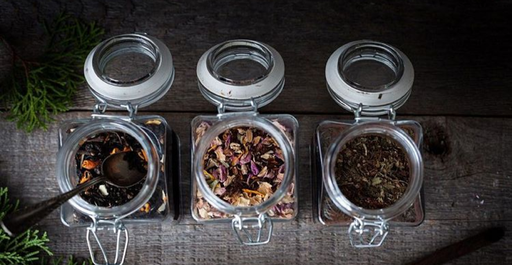
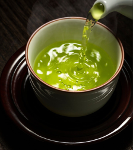
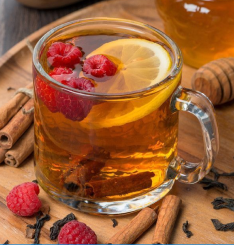
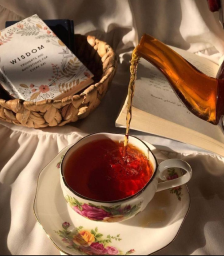

❮

❯

Зелёный чай
Вид чая, изготавливаемый из листьев камелии китайской (Camellia sinensis). В отличие от чёрного чая, не проходит процесс ферментативного окисления, поэтому имеет более мягкий и травянистый вкус.

Фруктовый чай
Напиток из смеси сушёных или свежих фруктов, ягод, трав и цветов. Отличительная черта — отсутствие искусственных ароматизаторов, поскольку вкусоаромат формируется исключительно природными компонентами.

Красный чай
Ферментированный чай, в процессе производства листья чайного куста подвергаются окислению, в результате чего приобретают характерный красно-коричневый оттенок и насыщенный вкус.